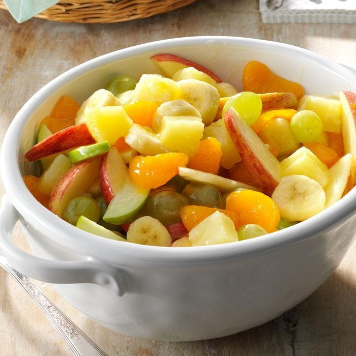

Fruit Salad Recipe
Servings - 5
Calories - 250
Prep Time - 10 min

Ingredients
- 1 can (20 ounces) pineapple chunks
- 2 large firm bananas, cut into 1/4-inch chunks
- 1 cup green grapes
- 1 can (15 ounces) mandarin oranges, drained
- 1 medium red apple, sliced
- 1 medium green apple, sliced
- 1/2 cup sugar
- 2 tablespoons cornstarch
- 1/3 cup orange juice
- 1 tablespoon lemon juice
Instructions
-
Drain pineapple, reserving juice. Combine the pineapple, bananas,
grapes, oranges and apples in a large bowl; set aside.
-
In a small saucepan, combine sugar and cornstarch. Add the orange
juice, lemon juice and reserved pineapple juice; stir until smooth.
Bring to a boil; reduce heat. Cook and stir for 2 minutes. Pour over
fruit; mix gently. Cover and refrigerate until serving.